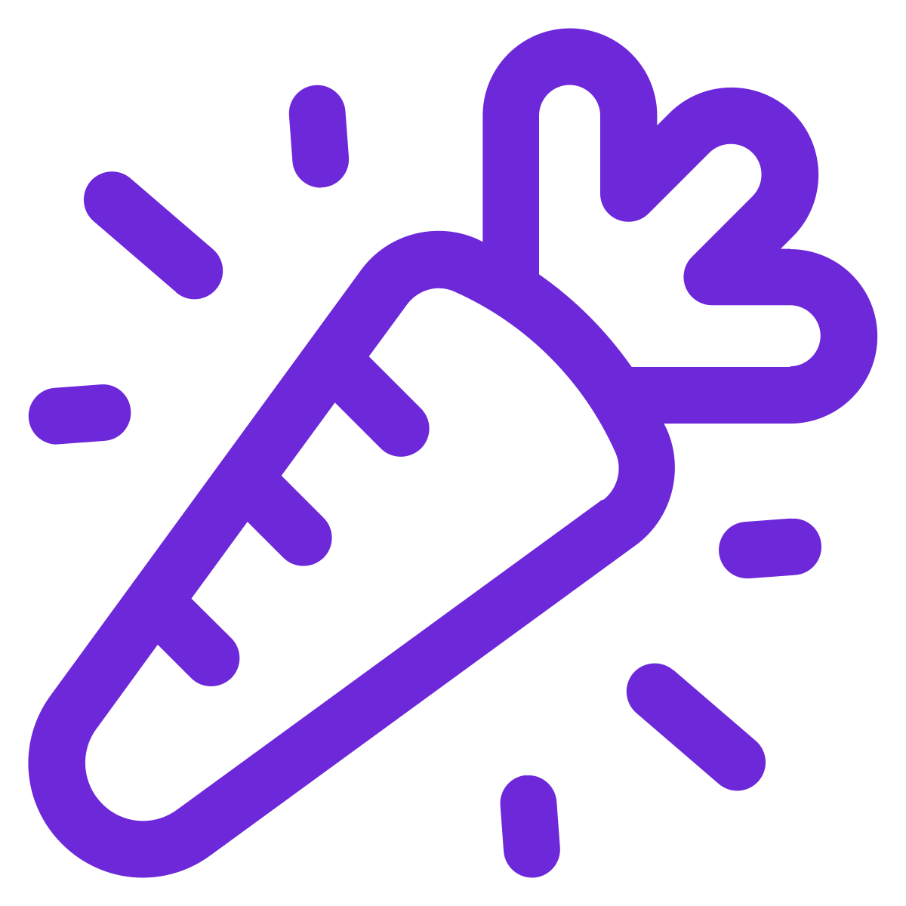

Re-engineering Whitelabel MD into a headless, scalable, exit-ready platform — and tripling revenue without tripling the team.
The overarching goal: 3× revenue on flat — or shrinking — headcount. The way there is a stable, HIPAA-compliant platform that turns Justin’s product instinct into shipped product and is built for a clean exit. Four phases, each gated on the last.
With the architecture proven in production, operational involvement goes one of two ways — chosen on the evidence, not a guess made today.
Two steps to start: sign the engagement agreement, then activate the monthly retainer. We can begin discovery the day access is provided.